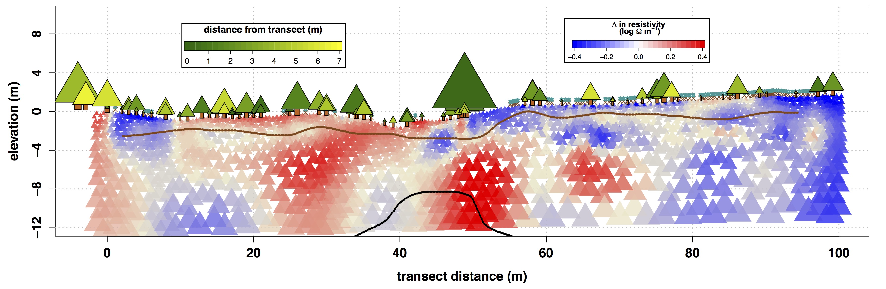

Title: Spatiotemporal soil and saprolite moisture dynamics across a semi-arid woody plant gradient.
Authors: Niemeyer, R.J., R. Heinse, T.E. Link, M.S. Seyfried, P. Klos, C. Williams, and T. Nielson
Journal: Journal of Hydrology (2017) doi: 10.1016/j.jhydrol.2016.11.005.
Abstract: Woody plant cover has increased 10-fold over the last 140+ years in many parts of the semi-arid western USA. Woody plant cover can alter the timing and amount of plant available moisture in the soil and saprolite. To assess spatiotemporal subsurface moisture dynamics over two water years in a snow-dominated western juniper stand we compared moisture dynamics horizontally across a discontinuous canopy, and vertically in soil and saprolite. We monitored soil moisture at 15 and 60 cm and conducted periodic electromagnetic induction and electrical resistivity tomography surveys aimed at sensing moisture changes within the root zone and saprolite. Timing of soil moisture dry down at 15 cm was very similar between the canopy and interspace. Conversely, dry down at 60 cm occurred 22 days earlier in the interspace than in the canopy. After a rain event, interspaces with more shrubs showed greater increases in soil moisture than interspaces with few shrubs. For the few rain events that were large enough to increase soil moisture at 60 cm, increases in moisture occurred almost exclusively below the canopy. Soil water holding capacity from 0 to 150 cm was a primary driver of areas that were associated with the greatest change in distributed electrical conductivity - an indicator of changes in soil moisture - across the growing season. Vegetation was also correlated with a greater seasonal change in electrical conductivity at these depths. The seasonal change in resistivity suggested moisture extraction by juniper well into the saprolite, as deep as 12 m below the surface. This change in deep subsurface resistivity primarily occurred below medium and large juniper trees. This study suggests how tree roots are both increasing infiltration below their canopy while also extracting moisture at depths of upwards of 12 m. Information from this study can help improve our understanding of juniper resilience to drought and the hydrologic impacts of semi-arid land cover change.
The article can be found here, or if you do not have access, you can download the proofs here (insert link).
